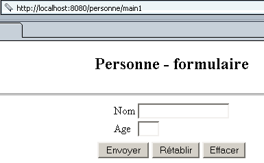
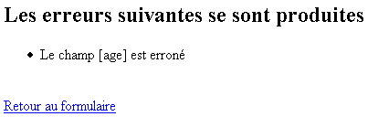
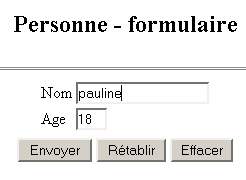
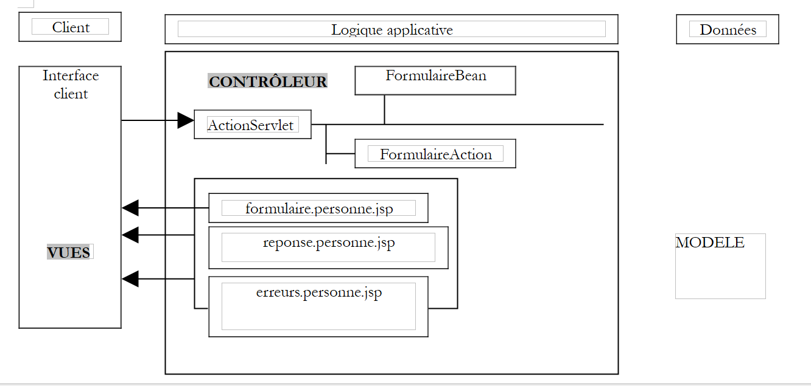
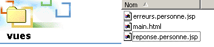

2. Die Anwendung „strutspersonne“
Wir haben eine „Person“-Anwendung nach der traditionellen Methode implementiert: mit Servlets und JSP-Seiten. Nun schlagen wir vor, Struts anhand derselben Anwendung vorzustellen.
2.1. So funktioniert die Anwendung
Schauen wir uns noch einmal an, wie die von uns entwickelte „Person“-Anwendung funktioniert. Sie besteht aus:
- einem Haupt-Servlet. Dieses übernimmt die gesamte Anwendungslogik.
- drei JSP-Seiten: formulaire.personne.jsp, reponse.personne.jsp und erreurs.personne.jsp
Die Anwendung funktioniert wie folgt. Sie ist über die URL http://localhost:8080/personne/main erreichbar. Unter dieser URL wird ein Formular angezeigt, das von der Seite formulaire.personne.jsp bereitgestellt wird:

Der Benutzer füllt das Formular aus und klickt auf die Schaltfläche [Submit]. Die Schaltfläche [Reset] ist eine Rücksetzschaltfläche, d. h., sie versetzt das Dokument in den Zustand zurück, in dem es empfangen wurde. Die Schaltfläche [Delete] ist eine Standardschaltfläche. Der Benutzer muss einen gültigen Namen und ein gültiges Alter angeben. Ist dies nicht der Fall, wird ihm über die JSP-Seite erreurs.personne.jsp eine Fehlerseite angezeigt. Hier sind einige Beispiele:
Austausch Nr. 1
 |  |
Wenn Sie dem Link [Zurück zum Formular] folgen, finden Sie das Formular in dem Zustand vor, in dem Sie es verlassen haben:
Austausch Nr. 2
 |  |
Wenn der Benutzer gültige Daten übermittelt, sendet die Anwendung eine Antwort über die JSP-Seite reponse.personne.jsp.
Austausch Nr. 1
 |  |
Wenn Sie dem Link [Zurück zum Formular] folgen, finden Sie das Formular in dem Zustand vor, in dem Sie es verlassen haben:
Austausch Nr. 2
 |  |
2.2. Die Struts-Architektur der Anwendung
Wir werden die folgende Struts-Architektur verwenden:
 |
- Es wird drei Ansichten geben
- Der Controller wird von Struts bereitgestellt
- FormBean ist die Klasse, die für die Speicherung der Werte aus dem Formular zuständig ist, das von der Ansicht form.person.jsp dargestellt wird
- FormAction ist die Klasse, die für die Verarbeitung der Werte von FormBean und die Angabe der zu sendenden Antwortseite zuständig ist:
- die Ansicht errors.person.jsp, wenn die Formulardaten fehlerhaft sind
- ansonsten die Ansicht „response.personne.jsp“
Für den Entwickler besteht die Aufgabe darin, den folgenden Code zu schreiben:
- die drei Ansichten
- das mit dem Formular verknüpfte FormBean
- die FormAction-Klasse, die für die Verarbeitung des Formulars zuständig ist
2.3. Kompilieren der für die Struts-Anwendung erforderlichen Klassen
Um die für unsere Anwendung erforderlichen Klassen zu kompilieren, verwenden wir JBuilder. JBuilder arbeitet mit einem JDK, das die für Struts-Anwendungen erforderlichen Klassen nicht enthält. Wir können JBuilder wie folgt konfigurieren:
- Tools / JDKs konfigurieren

- Fügen Sie über die Schaltfläche [Hinzufügen] die von Struts bereitgestellten .jar-Dateien zu den Klassenarchiven von JBuilder hinzu. Wenn Sie das Struts-Archiv auf Ihre Festplatte entpackt haben, können Sie alle .jar-Dateien aus dem Ordner <struts>/lib zu JBuilder hinzufügen:

Sie können alle oben genannten .jar-Dateien zu den Archiven von JBuilder hinzufügen. Wir haben bereits gesehen, dass auch Tomcat Zugriff auf die Struts-Archive benötigt. Bei Tomcat 4.x können Sie die Struts-.jar-Dateien in <tomcat4>\common\lib ablegen. Bei Tomcat 5.x können Sie sie in <tomcat5>\shared\lib ablegen. Anschließend können Sie JBuilder so konfigurieren, dass die Struts-JAR-Dateien am selben Speicherort wie bei Tomcat gefunden werden. Genau das wurde in dem zuvor erwähnten Screenshot mit den JBuilder-JAR-Dateien getan. Diese wurden aus dem Verzeichnis <tomcat5>\shared\lib übernommen.
Wenn JBuilder also beim Kompilieren einer Klasse meldet, dass es eine Struts-Klasse nicht finden kann, überprüfen Sie zwei Dinge:
- die Schreibweise der Klasse
- die von JBuilder verwendeten .jar-Dateien. Alle Struts-.jar-Dateien müssen enthalten sein.
2.4. Die Ansichten der Struts-Personne-Anwendung
Die drei Ansichten der Anwendung lauten wie folgt:
- form.person.jsp: zeigt das Formular zur Eingabe von Name und Alter einer Person an
- reponse.personne.jsp: zeigt die eingegebenen Werte an, sofern sie gültig sind
- errors.person.jsp: zeigt eventuelle Fehler an
2.4.1. Die Ansicht erreurs.personne.jsp
Diese Ansicht, die eine Liste von Fehlern anzeigt, wird wie folgt definiert:
<%@ taglib uri="/WEB-INF/struts-html.tld" prefix="html" %>
<html>
<head>
<title>Personne</title>
</head>
<body>
<h2>Les erreurs suivantes se sont produites</h2>
<html:errors/>
<html:link page="/formulaire.do">
Retour au formulaire
</html:link>
</body>
</html>
Dieser Code enthält zwei neue Funktionen:
- das Vorhandensein von <html:XX/>-Tags, die keine HTML-Tags sind. Sie können Bibliotheken mit JSP-Tags erstellen, die in Java-Code umgewandelt werden, wenn die JSP-Seite in ein Servlet transformiert wird.
- Die JSP-Seite muss die von ihr verwendeten Tag-Bibliotheken deklarieren. Dies geschieht hier mit der Zeile
Diese Zeile enthält zwei Informationen:
- uri: Der Speicherort der Datei, die die Verwendungsregeln der Bibliothek festlegt. Die Datei struts-html.tld ist im Struts-Paket enthalten. Im obigen Beispiel befindet sie sich im Ordner WEB-INF.
- prefix: Die Kennung, die im Code als Präfix für die Tags der Bibliothek verwendet wird. Dies verhindert Namenskonflikte, die bei der gleichzeitigen Verwendung mehrerer Tag-Bibliotheken auftreten könnten. Es ist möglich, dass zwei Tags mit demselben Namen in zwei verschiedenen Bibliotheken vorkommen. Indem jeder Bibliothek ein anderes Präfix zugewiesen wird, werden jegliche Mehrdeutigkeiten beseitigt.
- Das <html:errors>-Tag zeigt die Liste der Fehler an, die der Struts-Controller an dieses Tag übermittelt.
- Das <html:link>-Tag generiert einen Link, der auf /C/page verweist, wobei
- C der Anwendungskontext ist
- page die im Attribut „page“ des Tags angegebene URL ist
Das
erzeugt den folgenden HTML-Code:
wobei C der Anwendungskontext ist
2.4.2. Testen der Ansicht errors.person.jsp
- Die Datei errors.person.jsp befindet sich im Ordner „views“ der Anwendung strutspersonne:

- Die Datei „struts-html.tld“ wird aus der Struts-Distribution (<struts>/lib) entnommen und im Verzeichnis „WEB-INF“ abgelegt:

- Die Datei struts-config.xml wird wie folgt geändert:
<?xml version="1.0" encoding="ISO-8859-1" ?>
<!DOCTYPE struts-config PUBLIC
"-//Apache Software Foundation//DTD Struts Configuration 1.1//EN"
"http://jakarta.apache.org/struts/dtds/struts-config_1_1.dtd">
<struts-config>
<action-mappings>
<action
path="/main"
parameter="/vues/main.html"
type="org.apache.struts.actions.ForwardAction"
/>
<action
path="/erreurs"
parameter="/vues/erreurs.personne.jsp"
type="org.apache.struts.actions.ForwardAction"
/>
</action-mappings>
</struts-config>
Wir legen in der Konfigurationsdatei eine neue URL „/errors“ an, die vom Struts-Controller verarbeitet werden soll. Die URL „/errors.do“ wird auf die Ansicht „/views/errors.person.jsp“ umgeleitet. Die Datei „struts-config.xml“ wird im Ordner „WEB-INF“ abgelegt.
- Wir starten Tomcat neu, damit die neue Datei struts-config.xml berücksichtigt wird, und rufen dann die URL http://localhost:8080/strutspersonne/erreurs.do auf:

Das <html:errors/>-Tag hat nichts ausgegeben. Das ist normal; die ForwardAction hat die vom Tag erwartete Fehlerliste nicht generiert. Dennoch zeigt die obige Antwort, dass unsere JSP-Ansicht zumindest syntaktisch korrekt ist; andernfalls hätten wir eine Fehlerseite erhalten. Sehen wir uns den vom Browser empfangenen HTML-Code an (Ansicht/Quelltext):
<html>
<head>
<title>Personne - erreurs</title>
</head>
<body>
<h2>Les erreurs suivantes se sont produites</h2>
<a href="/strutspersonne/formulaire.do">Retour au formulaire</a>
</body>
</html>
Beachten Sie den durch das <html:link>-Tag generierten Link. Der Kontext /strutspersonne wurde automatisch in den Link aufgenommen. Dadurch kann die Anwendung von einem Kontext in einen anderen verschoben werden (z. B. bei einem Rechnerwechsel), ohne dass die durch <html:link> generierten Links geändert werden müssen.
2.4.3. Die Ansicht „response.personne.jsp“
Diese Ansicht, die die im Formular eingegebenen Werte bestätigt, sieht wie folgt aus:
<%@ taglib uri="/WEB-INF/struts-html.tld" prefix="html" %>
<%
// on récupère les données nom, age
//String nom=(String)request.getAttribute("nom");
String nom="jean";
//String age=(String)request.getAttribute("age");
String age="24";
%>
<html>
<head>
<title>Personne</title>
</head>
<body>
<h2>Personne - réponse</h2>
<hr>
<table>
<tr>
<td>Nom</td>
<td><%= nom %>
</tr>
<tr>
<td>Age</td>
<td><%= age %>
</tr>
</table>
<br>
<html:link page="/formulaire.do">
Retour au formulaire
</html:link>
</body>
</html>
Die Seite zeigt zwei Informationen an, [name] und [age], die ihr vom Controller im vordefinierten Request-Objekt übergeben werden. Hier führen wir einen Test durch, bei dem der Controller keine Möglichkeit hat, die Werte von [name] und [age] festzulegen. Daher initialisieren wir diese beiden Informationen mit beliebigen Werten. Auch hier wird der Link zurück zum Formular durch ein <html:link>-Tag generiert.
2.4.4. Testen der Ansicht reponse.personne.jsp
- Die Datei reponse.personne.jsp befindet sich im Ordner „views“ der Anwendung strutspersonne:

- Die Datei „struts-config.xml“ wird wie folgt geändert:
<?xml version="1.0" encoding="ISO-8859-1" ?>
<!DOCTYPE struts-config PUBLIC
"-//Apache Software Foundation//DTD Struts Configuration 1.1//EN"
"http://jakarta.apache.org/struts/dtds/struts-config_1_1.dtd">
<struts-config>
<action-mappings>
<action
path="/main"
parameter="/vues/main.html"
type="org.apache.struts.actions.ForwardAction"
/>
<action
path="/erreurs"
parameter="/vues/erreurs.personne.jsp"
type="org.apache.struts.actions.ForwardAction"
/>
<action
path="/reponse"
parameter="/vues/reponse.personne.jsp"
type="org.apache.struts.actions.ForwardAction"
/>
</action-mappings>
</struts-config>
Wir erstellen in der Konfigurationsdatei eine neue URL /reponse, die vom Struts-Controller verarbeitet werden soll. Die URL /reponse.do wird zur Ansicht /vues/reponse.personne.jsp weitergeleitet. Die Datei struts-config.xml wird im Ordner WEB-INF abgelegt.
- Wir starten Tomcat neu, damit die neue Datei struts-config.xml berücksichtigt wird, und rufen dann die URL http://localhost:8080/strutspersonne/erreurs.do auf:

Wir erhalten genau das, was wir erwartet haben.
2.4.5. Die Ansicht „formulaire.personne.jsp“
Diese Ansicht zeigt das Formular zur Eingabe des Namens und des Alters des Benutzers an. Ihr JSP-Code lautet wie folgt:
<%@ taglib uri="/WEB-INF/struts-html.tld" prefix="html" %>
<html>
<meta http-equiv="pragma" content="no-cache">
<head>
<title>Personne - formulaire</title>
<script language="javascript">
function effacer(){
with(document.frmPersonne){
nom.value="";
age.value="";
}
}
</script>
</head>
<body>
<center>
<h2>Personne - formulaire</h2>
<hr>
<html:form action="/main" name="frmPersonne" type="istia.st.struts.personne.FormulaireBean">
<table>
<tr>
<td>Nom</td>
<td><html:text property="nom" size="20"/></td>
</tr>
<tr>
<td>Age</td>
<td><html:text property="age" size="3"/></td>
</tr>
<tr>
</table>
<table>
<tr>
<td><html:submit value="Envoyer"/></td>
<td><html:reset value="Rétablir"/></td>
<td><html:button property="btnEffacer" value="Effacer" onclick="effacer()"/></td>
</tr>
</table>
</html:form>
</center>
</body>
</html>
Wir sehen, dass die Tag-Bibliothek „struts-html.tld“ in der Fehleransicht verwendet wird. Es erscheinen neue Tags:
wird sowohl zur Generierung des HTML-Tags <form> als auch zur Bereitstellung von Informationen für den Controller verwendet, der dieses Formular verarbeitet:
Beachten Sie, dass die Methode zum Senden von Formularparametern (GET/POST) an den Controller nicht angegeben ist. Dies könnte mithilfe des Attributs „method“ erfolgen. Fehlt dieses Attribut, wird standardmäßig die POST-Methode verwendet. | |||||||
Wird verwendet, um das Tag <input type="text" value="..."> zu generieren:
| |||||||
wird verwendet, um den HTML-Tag <input type="submit"...> zu generieren | |||||||
wird verwendet, um den HTML-Tag <input type="reset"...> zu generieren | |||||||
wird verwendet, um den HTML-Tag <input type="button"...> zu generieren |
2.4.6. Die mit dem Formular „formulaire.personne.jsp“ verknüpfte Bean
- Bei Struts muss jedes Formular mit einer Bean verknüpft sein, die für die Speicherung der Formularwerte und deren Pflege in der aktuellen Sitzung zuständig ist. Eine Bean ist eine Java-Klasse, die einer bestimmten Syntax entsprechen muss. Die mit einem Formular verknüpfte Bean muss die in der Struts-Bibliothek definierte Klasse ActionForm erweitern:
- Die Namen der Attribute des Beans müssen mit den Formularfeldern übereinstimmen (Eigenschaftsattribute der <html:text>-Tags des Formulars). Basierend auf dem Code des vorherigen Formulars muss der Bean daher zwei Felder namens name und age haben.
- Für jedes Feld XX im Formular muss der Bean zwei Methoden definieren:
- public void setXX(Type value): um dem Attribut XX einen Wert zuzuweisen
- public getXX(Value type): zum Abrufen des Werts des Felds XX
Die mit dem vorherigen Formular verknüpfte Bean könnte wie folgt aussehen:
package istia.st.struts.personne;
import org.apache.struts.action.ActionForm;
public class FormulaireBean extends ActionForm {
// name
private String nom = null;
public String getNom() {
return nom;
}
public void setNom(String nom) {
this.nom = nom;
}
// age
private String age = null;
public String getAge() {
return age;
}
public void setAge(String age) {
this.age = age;
}
}
Wir werden diese Klasse mit JBuilder kompilieren.
2.4.7. Testen der Ansicht „formulaire.personne.jsp“
Die Datei „formulaire.personne.jsp“ befindet sich im Ordner „views“ der Anwendung „strutspersonne“:

- Die Datei struts-config.xml wird wie folgt geändert:
<?xml version="1.0" encoding="ISO-8859-1" ?>
<!DOCTYPE struts-config PUBLIC
"-//Apache Software Foundation//DTD Struts Configuration 1.1//EN"
"http://jakarta.apache.org/struts/dtds/struts-config_1_1.dtd">
<struts-config>
<action-mappings>
<action
path="/main"
parameter="/vues/main.html"
type="org.apache.struts.actions.ForwardAction"
/>
<action
path="/erreurs"
parameter="/vues/erreurs.personne.jsp"
type="org.apache.struts.actions.ForwardAction"
/>
<action
path="/reponse"
parameter="/vues/reponse.personne.jsp"
type="org.apache.struts.actions.ForwardAction"
/>
<action
path="/formulaire"
parameter="/vues/formulaire.personne.jsp"
type="org.apache.struts.actions.ForwardAction"
/>
</action-mappings>
</struts-config>
In der Konfigurationsdatei erstellen wir eine neue URL /form, die vom Struts-Controller verarbeitet wird. Die URL /form.do wird zur Ansicht /views/form.person.jsp weitergeleitet. Die Datei struts-config.xml befindet sich im Ordner WEB-INF.
- Wir legen die Klasse FormulaireBean in WEB-INF/classes ab:

- Wir starten Tomcat neu, damit die neue Datei struts-config.xml berücksichtigt wird, und rufen dann die URL http://localhost:8080/strutspersonne/formulaire.do auf:

Das Formular wird korrekt angezeigt. Vielleicht interessiert es uns, wie die im JSP-Code des Formulars verstreuten <html:XX>-Tags „übersetzt“ wurden:
<html>
<meta http-equiv="pragma" content="no-cache">
<head>
<title>Personne - formulaire</title>
<script language="javascript">
function effacer(){
with(document.frmPersonne){
nom.value="";
age.value="";
}
}
</script>
</head>
<body>
<center>
<h2>Personne - formulaire</h2>
<hr>
<form name="frmPersonne" method="post" action="/strutspersonne/main.do">
<table>
<tr>
<td>Nom</td>
<td><input type="text" name="nom" size="20" value=""></td>
</tr>
<tr>
<td>Age</td>
<td><input type="text" name="age" size="3" value=""></td>
</tr>
<tr>
</table>
<table>
<tr>
<td><input type="submit" value="Envoyer"></td>
<td><input type="reset" value="Rétablir"></td>
<td><input type="button" name="btnEffacer" value="Effacer" onclick="effacer()"></td>
</tr>
</table>
</form>
</center>
</body>
</html>
Im resultierenden Formular funktionieren die Schaltflächen [Reset] und [Clear]. Die Schaltfläche [Submit] leitet zur URL /strutspersonne/main.do weiter. Gemäß der Datei web.xml der Anwendung wird dies vom Struts-Controller verarbeitet. Gemäß der Datei struts-config.html muss der Controller die Anfrage an die Ansicht /vues/main.html weiterleiten. Probieren wir es aus:

Alles funktioniert wie erwartet. Wir müssen die Formularwerte nun noch tatsächlich verarbeiten, d. h. die Action-Klasse schreiben, die die Formulardaten in ein FormBean-Objekt überträgt.